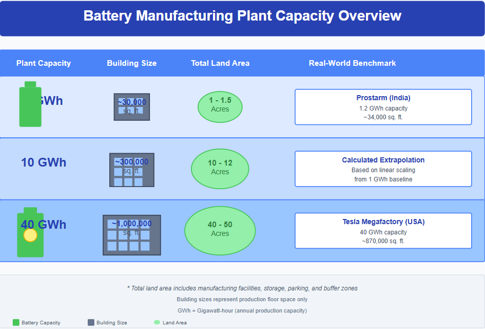
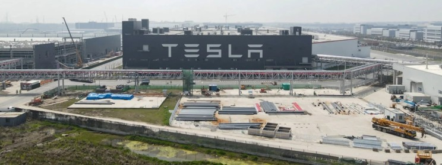
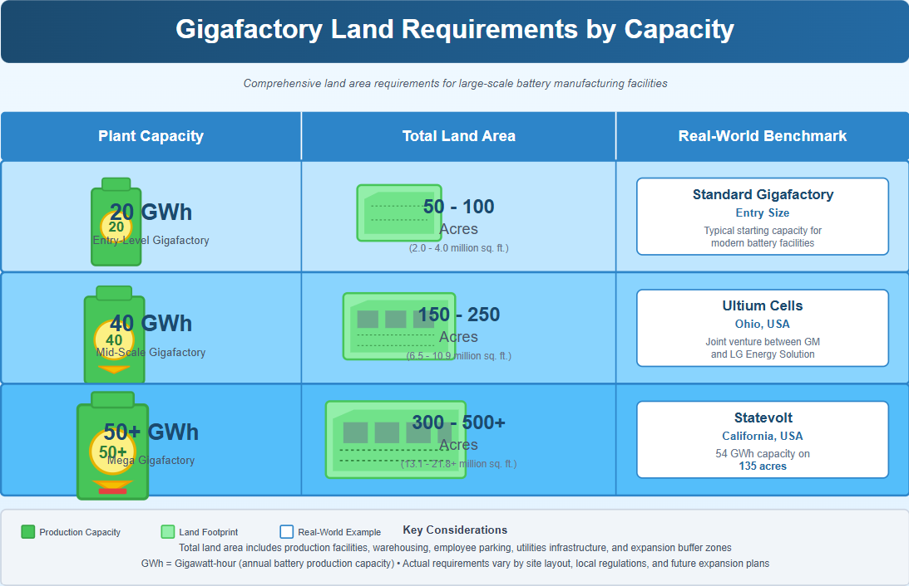
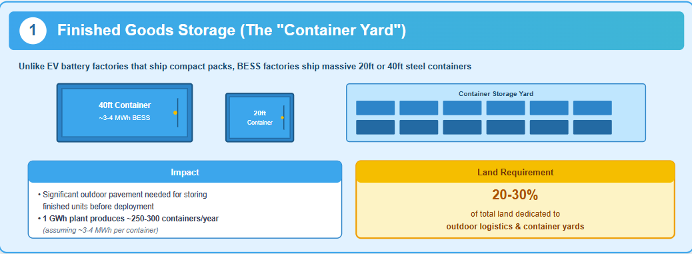
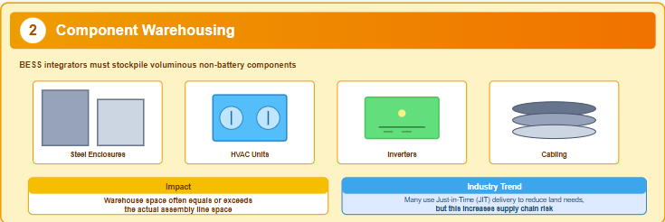
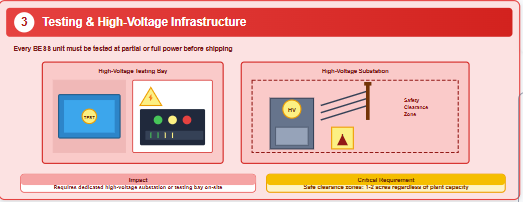
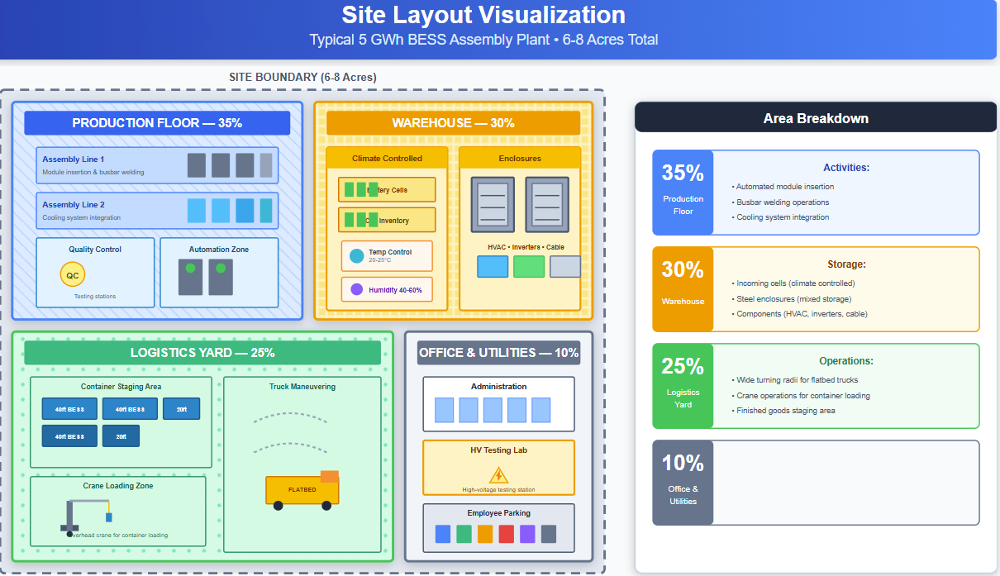
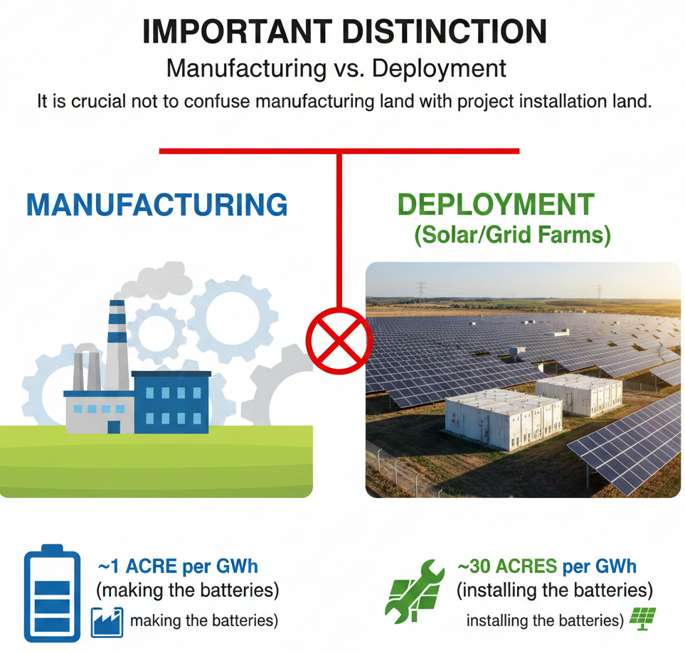

The land required for a Battery Energy Storage System (BESS) manufacturing unit depends fundamentally on the facility's depth of production. System Integration plants (assembling battery modules into finished containerized solutions) are highly space-efficient, requiring approximately 0.7 to 1.5 acres of land per GWh of annual capacity. In contrast, Cell Manufacturing Gigafactories (producing the lithium-ion cells from raw chemicals) require significantly more space, typically 2 to 5 acres per GWh.
The following analysis breaks down these requirements by facility type, using real-world benchmarks from industry leaders like Tesla, Fluence, and emerging manufacturers.
1. The Critical Distinction: Assembly vs. Cell Manufacturing
To accurately plan for land, one must first define the scope of the "manufacturing unit." Most BESS manufacturers today are Integrators—they buy battery cells and assemble them into racks, enclosures, and software-managed systems.
A. System Integration & Assembly Plants (The Most Common BESS Unit)
- Function: Assembling battery modules, racks, inverters, and cooling systems into large shipping containers (e.g., 20ft ISO containers).
- Land Use Intensity: High. These facilities function more like advanced logistics and mechanical assembly hubs than chemical plants.
- Benchmark Metric: ~25,000 – 35,000 sq. ft. of building floor per GWh.

*Total Land Area assumes a 40-50% site coverage ratio to allow for heavy logistics, container storage, and parking.
Case Study: Tesla Lathrop Mega factory The "gold standard" for BESS manufacturing is Tesla's dedicated Megapack factory in Lathrop, California.
- Capacity: 40 GWh / year.
- Building Footprint: ~870,000 – 1,000,000 sq. ft.
- Efficiency: This implies an incredibly dense production rate of roughly 22,000 sq. ft. per GWh. The site focuses heavily on automated assembly and does not manufacture the battery cells on-site (cells are imported from Nevada or suppliers).

B. Cell Manufacturing (Gigafactories)
- Function: Chemical processing, electrode coating, cell winding, and formation. Requires dry rooms and solvent recovery systems.
- Land Use Intensity: Low. Requires massive footprint for chemical storage, utilities, and safety buffers.
- Benchmark Metric: 2 – 5 Acres per GWh.

2. Key Factors Influencing Land Size
For a standard BESS assembly unit (Type A), three specific factors drive land requirements beyond the production floor:
1. Finished Goods Storage (The "Container Yard")
Unlike EV battery factories that ship compact packs, BESS factories ship massive 20ft or 40ft steel containers.
- Impact: You need significant outdoor pavement for storing finished units before deployment. A 1 GWh plant might produce ~250-300 containerized units (assuming ~3-4 MWh per container) per year.
- Requirement: Plan for 20-30% of your total land to be dedicated to outdoor logistics and container yards.

2. Component Warehousing
BESS integrators must stockpile voluminous non-battery components: steel enclosures, HVAC units, inverters, and cabling.
- Impact: Warehouse space often equals or exceeds the actual assembly line space.
- Trend: Many manufacturers use "Just-in-Time" (JIT) delivery to reduce on-site land needs, but this increases supply chain risk.

3. Testing & High-Voltage Infrastructure
Every BESS unit must be tested at partial or full power before shipping.
- Impact: Requires a dedicated high-voltage substation or testing bay on-site.
- Requirement: Safe clearance zones for high-voltage testing can consume 1-2 acres regardless of plant capacity.

3. Site Layout Visualization (Typical 5 GWh Assembly Plant)
For a hypothetical 5 GWh BESS Assembly Plant, a typically required site would be ~6–8 Acres. The usage breakdown is generally:
- Production Floor (35%): Automated module insertion, busbar welding, cooling system integration.
- Warehouse (30%): Incoming cells (climate controlled) and enclosures (outdoor/indoor).
- Logistics Yard (25%): Wide turning radii for flatbed trucks, crane operations for loading containers.
- Office & Utilities (10%): Admin, HV testing lab, employee parking.

4. Important Distinction: Manufacturing vs. Deployment
It is crucial not to confuse manufacturing land with project installation land.
- Manufacturing: ~1 acre per GWh (making the batteries).
- Deployment (Solar/Grid Farms): ~30 acres per GWh (installing the batteries).

Conclusion
For investors and industrial planners, the land barrier to entry for BESS assembly is surprisingly low. A world-class, 10 GWh facility—capable of generating billions in revenue—can theoretically fit on a 10–15-acre industrial plot, provided it focuses solely on integration and automation. However, if the goal includes upstream cell manufacturing, the land requirement expands by a factor of 5-10x, necessitating hundreds of acres and complex environmental permitting.